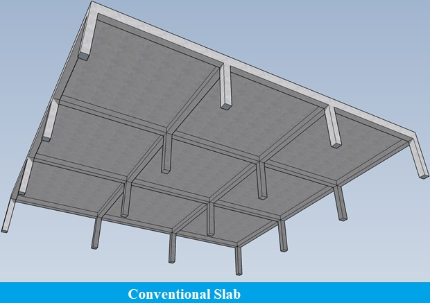

Conventional Slab

A standard plate is a plate that is endorsed on beams and pillars. In this kind, the slab thickness is small, but the beam depth is great, and the weight is transferred to beams and columns afterward. It requires more formwork than the simple plate, and there is no need to offer traditional plate-style panel caps.
The standard slab thickness is 4?? (10 cm). 5?? to 6?? inches is recommended if the wood is subjected to frequent high loads, such as engine trucks or rubbish carts. These slabs are divided into two categories based on their length and width: – i) One-way Slabs and ii) Two-way Slab.
i) One-way Slab:
A one-way flat slab, one of the most prevalent slab types in construction projects, a one-way flat slab uses 4 to 6 inches of concrete to sustain large loads. The slab’s name refers to the support structure. It’s used when one direction is supported while the other requires less support.
This slab is a cost-effective and straightforward option for commercial or residential construction. It’s less expensive than other slab kinds, especially for a ground-level structure. One of the biggest drawbacks of one-way flat slabs is that they can’t span as much as other slab kinds. As a result, they are inappropriate for various bridge and ceiling applications.
ii)Two-way Slab:
It is known as a two-way slab because beams support it on all four sides, and the supports carry the weights in both directions. The ratio of longer span to shorter span in a two-way slab is less than two due to the likelihood of the slabs bending to the four supporting edges in both directions.
This type of slab has a length and width of more than 4 meters of length and width. In a two-way slab, distribution bars are installed at both ends to prevent the buildup of strains. These slabs are utilized in the construction of multi-story buildings floors.